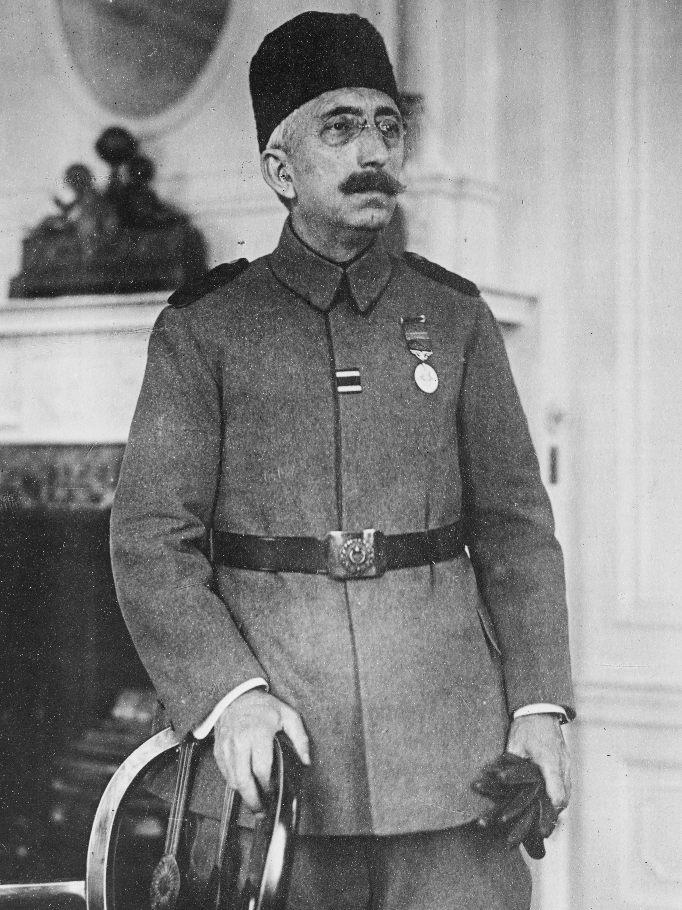

| önceki |  |
Anasayfa |
VI. Mehmed (Sultan Mehmed Vahdeddin), Osmanlı İmparatorluğu'nun 36. ve son padişahıdır. Babası Sultan Abdülmecid, annesi Gülüstü Hanım'dır. I. Dünya Savaşı'nın en karanlık günlerinde tahta çıkmış ve 4 yıl süren saltanatı, 623 yıllık Osmanlı Hanedanı'nın ve imparatorluğun resmen sona erişine sahne olmuştur.
İşgal Yılları, Millî Mücadele ve Saltanatın Sonu
- Mondros Mütarekesi ve İşgal (1918): Tahta geçtikten birkaç ay sonra ağır şartlar içeren Mondros Mütarekesi imzalanmış; İtilaf Devletleri donanması Dolmabahçe Sarayı önlerine demirleyerek payitaht İstanbul'u fiilen işgal etmiştir.
- Mustafa Kemal Paşa'nın Samsun'a Gönderilmesi (1919): Asayişi sağlamak ve orduyu teftiş etmek üzere Mustafa Kemal Paşa'yı 9. Ordu Müfettişi sıfatıyla geniş yetkiler vererek 19 Mayıs 1919'da Bandırma Vapuru ile Samsun'a göndermiştir. Bu adım, Türk Millî Mücadelesi'nin meşalesini yakmıştır.
- Sevr Antlaşması ve Millî Direniş: 1920'de İtilaf Devletleri'nin dayattığı ve vatanı parçalayan Sevr taslağı, Ankara'da kurulan Türkiye Büyük Millet Meclisi ve Türk milleti tarafından şiddetle reddedilmiş; Kurtuluş Savaşı başlatılmıştır.
- Büyük Zafer ve Saltanatın Kaldırılması (1922): Mustafa Kemal Paşa önderliğindeki Türk ordusunun Büyük Taarruz ile vatanı işgalden kurtarmasının ardından, TBMM tarafından 1 Kasım 1922'de 623 yıllık Osmanlı saltanatı resmen kaldırılmıştır.
- Yurt Dışına Çıkışı ve Vefatı: Hayati tehlikesi ve siyasi gerilimler sebebiyle 17 Kasım 1922 sabahı İngiliz Malaya zırhlısıyla İstanbul'dan ayrılmış; sırasıyla Malta ve Mekke'ye gitmiş, son olarak İtalya'nın San Remo kentine yerleşmiştir. 16 Mayıs 1926'da San Remo'da yoksulluk içinde vefat etmiş; borçları sebebiyle haczedilen tabutu kaldırıldıktan sonra Suriye'nin başkenti Şam'daki tarihi Süleymaniye Külliyesi bahçesine defnedilmiştir.
Ailesi
- Eşleri:
- Emine Nazikeda Başkadın
- Şadiye Müveddet Kadın
- İnşirah Hânım
- Nevvare Hânım
- Nimet Nevzad Hânım
- Erkek çocukları:
- Şehzade Mehmed Ertuğrul Efendi (1912 – 1944)
- Kız çocukları:
- Fenire Sultân (bebekken vefat etmiştir)
- Fatma Ulviye Sultân (Sadrazam Tevfik Paşa'nın oğlu İsmail Hakkı Bey ile evlenmiştir)
- Rukiye Sabiha Sultân (Son Halife Abdülmecid Efendi'nin oğlu Ömer Faruk Efendi ile evlenmiştir)
Mehmed Vahdeddin hakkında daha fazla bilgi için buraya tıklayın.